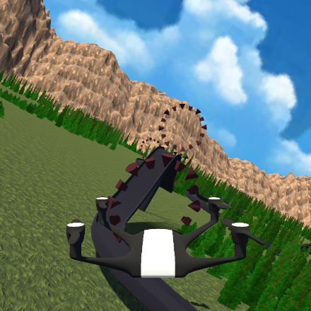

My Games
|
Boss Battle
|

|

|
Hotel Hell
|
|
Drone Racer
|
 |

|
Defender Clone
|
|
Rogue Light
|

|
About Me


JHunt.WorkEmail@gmail.com
(+44)7342820032

|

|
| JHuntsGHub |
- Primary Skills
Unity & C# - Other Skills
Java, C++, Python, HTML/CSS, Ruby, Scheme, Bash - Software
Maya, GIMP, Audacity, GitHub, Word, Excel, Powerpoint, Trello, Windows, Debian/Linux - Achievments
- I have made several games for university assignments and game jams/hackathons as well as making many games myself.
- I won Best 2D Game in Unity at the Hack the Midlands hackathon.
- Two friends and myself formed a game jam society which hosted numerous events. We went on to win a £1000 first prize from Santander for a massive event.
- In second year, I was employed as a BCU Demonstrator on a programming course.
- Throughout first and second year I was an elected BCU Class Representative and BCU School Representative on the BCU Student/Management Body.
- For my final year project, I am made on a procedural dungeon generator.